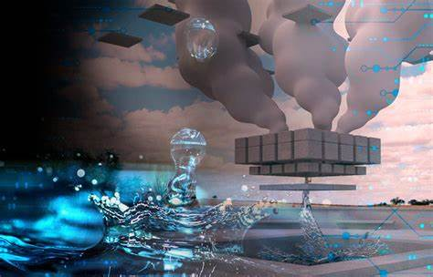

Innovaciones Clave
- Desalinización: Procesos tecnológicos para convertir agua salada en potable.
- Sistemas de riego inteligente: Dispositivos que optimizan el uso del agua en la agricultura.
- Monitoreo digital: Uso de sensores para medir la calidad del agua en tiempo real.
Proyectos de Innovación
En países como Israel y Singapur, se han implementado tecnologías avanzadas para el reciclaje y reutilización del agua, convirtiéndolos en referentes mundiales en manejo hídrico.
